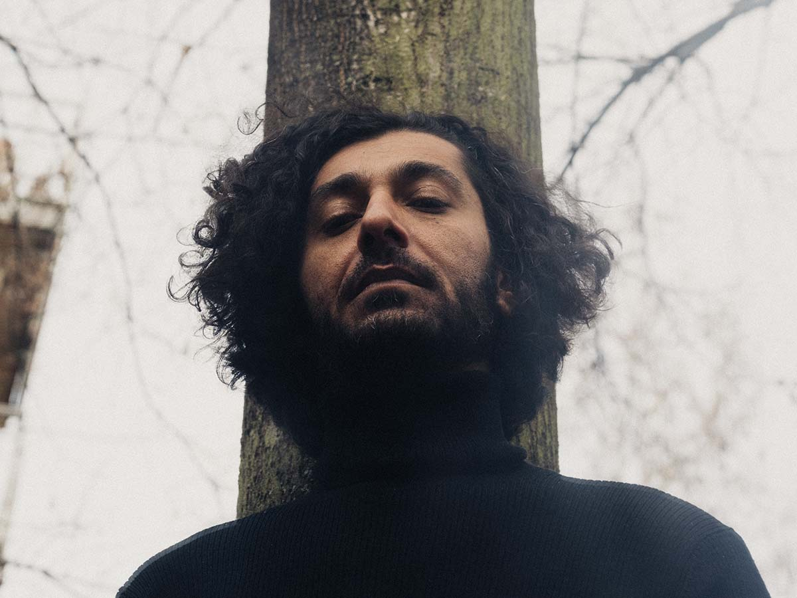
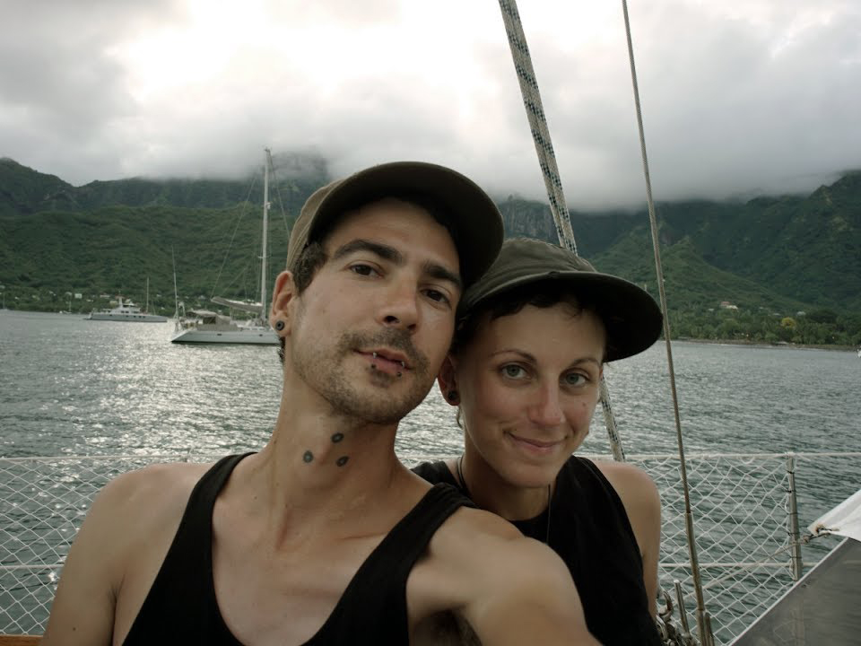
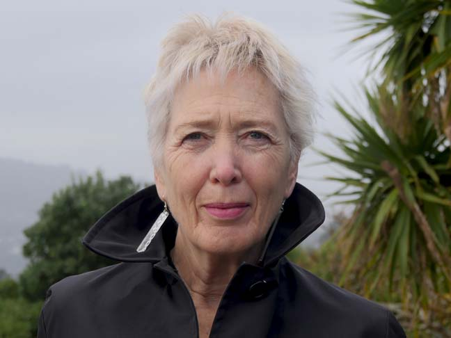

Keynote speakers
Khyam Allami
© Camille BlakeKhyam Allami (born in Damascus 1981) is an Iraqi-British multi-instrumentalist musician, composer, researcher and founder of Nawa Recordings. Primarily a performer of the Oud, his artistic research focuses on the development of contemporary and experimental repertoire based on the fundamentals of Arabic music, with a focus on tuning and microtonality. He holds a BA and Masters in Ethnomusicology from SOAS, University of London and is currently completing an M4C/AHRC funded PhD in composition at the Royal Birmingham Conservatoire, Birmingham City University.
Hundred Rabbits (Rek Bellum & Devine Lu Linvega)
Rekka Bellum & Devine Lu Linvega operate a small open-source software studio, aboard a 10 meters long sailboat called Pino. They have sailed around the Pacific Ocean and realized how fragile the modern-day computing stack was. Living in remote uninhabited parts of the world has offered them a playground to learn how technology degrades beyond the shores of the western world. Hundred Rabbits is a nonprofit organization exploring the planned obsolescence of modern technology at the bounds of the hyper-connected world, with the hope of building a more resilient future.
Sally Jane Norman
Performance scholar working on art and technology, embodiment and expressive gesture, sound environments. Director since 2017 of Te Kōkī/ New Zealand School of Music (Te Herenga Waka/ Victoria University Wellington). Previously co-founder of Sussex Humanities Lab and founding Director of Culture Lab, Newcastle-upon-Tyne. As STEIM Artistic Guest Director (1998-2000), co-organiser of the Touch Festival. Dual citizen (New-Zealand-France) engaged in international cultural policy and research.